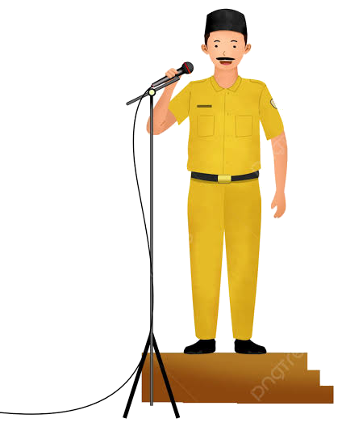

Agus Fedric, S.Pd.
Kepala SMK Bintang Nusantara 2
Kepala SekolahAssalamu'alaikum Warahmatullahi Wabarakatuh
Pendidikan bukan hanya soal memindahkan materi pelajaran, tetapi tentang menumbuhkan karakter, rasa ingin tahu, dan keberanian untuk mencoba. Di SMK Bintang Nusantara 2, kami percaya bahwa setiap siswa memiliki potensi yang perlu dirawat dengan pendampingan yang sabar.
Kami berupaya menghubungkan pembelajaran di kelas dengan pengalaman nyata di ruang praktik dan dunia kerja. Nilai akademik tetap penting, tetapi kemandirian, kedisiplinan, dan kepedulian kepada sesama juga menjadi bekal yang kami tanamkan setiap hari.
Atas nama keluarga besar sekolah, saya mengucapkan terima kasih kepada orang tua, guru, dan mitra industri yang terus mendukung. Mari bersama-sama membangun generasi yang kompeten, berakhlak mulia, dan siap menghadapi perubahan zaman. Wassalamu'alaikum warahmatullahi wabarakatuh.